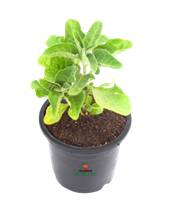

Ashwagandha
Scientific Name: Withania somnifera
Common Names: Ashwagandha (Hindi), Indian Ginseng, Winter Cherry, Poison Gooseberry
Habitat and Distribution
Geographical Range: Ashwagandha is native to India, the Middle East, and parts of Africa. It thrives in dry regions and is commonly found in:
- India (particularly in the arid regions of Rajasthan and Madhya Pradesh)
- Nepal
- Yemen
- Parts of Africa
Medicinal Uses
Ashwagandha is revered in Ayurveda for its adaptogenic properties, which help the body cope with stress. Its medicinal applications include:
- Stress and Anxiety Relief: It is known to lower cortisol levels and alleviate stress.
- Energy and Stamina: Traditionally used to enhance energy, vitality, and overall stamina.
- Cognitive Function: Promotes memory and cognitive abilities, helping with concentration and mental clarity.
- Anti-inflammatory Effects: Contains compounds that reduce inflammation and pain.
- Immune Support: Boosts the immune system and promotes overall health.
- Hormonal Balance: May support reproductive health and balance hormones in both men and women.
How to Grow Ashwagandha
- Soil Requirements: Prefers well-drained, sandy loam soil with a pH of 7.0 to 8.0.
- Sunlight: Requires full sunlight (at least 6-8 hours a day).
- Climate: Thrives in warm climates and can tolerate drought conditions.
- Planting:
- Seeds: Sow seeds directly in the soil during spring or monsoon when temperatures are warm.
- Spacing: Maintain a spacing of about 2-3 feet between plants to allow for growth.
- Watering: Water the plants regularly but avoid waterlogging. Allow the soil to dry between waterings.
- Fertilization: Use organic compost or well-rotted manure during planting to enhance growth.
- Harvesting: The roots are harvested after 6-7 months when the plants are mature. Roots can be dug out carefully without damaging them.
Use Cases of Ashwagandha
Stress Relief
Ashwagandha is widely used for reducing stress and anxiety levels, promoting a calm and balanced state of mind.
Boosting Immunity
Regular consumption of Ashwagandha can help boost immunity and protect against various diseases.
Enhancing Cognitive Function
Known to improve memory and cognitive abilities, making it popular among students and professionals.
Anti-Inflammatory Effects
Contains properties that reduce inflammation and help in the management of arthritis and other inflammatory conditions.